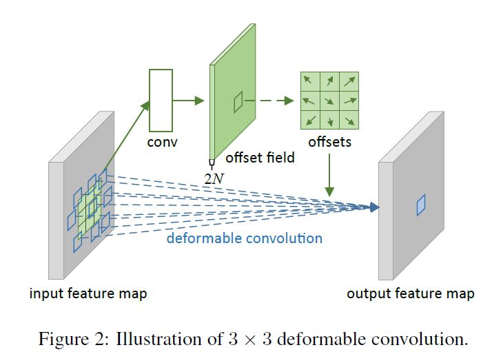

关于 Deformable Convolutional Networks 的一些个人理解。
— 有效感受野 Effective Receptive Field
Understanding the effective receptive field in deep convolutional neural networks
- 感受野中的像素对最后的输出响应贡献不一。靠近中心的像素贡献更大。
- 有效感受野只占理论感受野的一小部分，并且呈高斯分布。
- 有效感受野尺寸的增长幅度不是像理论感受野那样随卷积数目线性增长，而是与卷积数目的均方根线性相关。
这个发现说明，即使是很深的 CNN 网络的顶层的单元的有效感受野也可能不够大。
Deformable Convolution
对一个3*3的 deformable conv 来说，先在分支上进行卷积操作，得到的 offset field 与 input feature map 尺寸相同，通道数为 2N（对 3*3 卷积，N=9）。这样，offset field 每个位置处的 2N 维向量代表在 input feature map 上此处卷积时对应的 N 个位置的偏移。如下图所示。

Deformable ROI Pooling
首先通过标准的兴趣区域池化（绿色）获得兴趣区域对应的特征，该特征通过一个全连接层得到兴趣区域每个部位(每个 bin)的位移量。用该位移作用在标准的 ROI Pooling 的每个区域块上，得到 可变形兴趣区域池化（蓝色），以获得不局限于兴趣区域固定网格的特征
简单地说，假如要对某个 ROI 区域进行 3*3 的 Deformable ROI Pooling，那么则先对此 ROI 进行普通的 ROI Pooling，得到 3*3*C (C 为 ROI pooling 前的 feature map 的 channel 数) 的 feature map。然后，对得到的 feature map 进行 fc，fc 层的输出个数为 k*k*2，其中 k 为 pooling 后的尺寸，此处为 3。这样，就得到 ROI 区域中每块 （共 k*k 块）的偏移了。根据这个偏移，得到每个块的新的位置，进行 ROI Pooling，就是 Deformable ROI Pooling。
所以，在 Deformable ROI Pooling 中，偏移是针对每个块（bin）的，某个 bin 内的所有像素的偏移都是一样的。